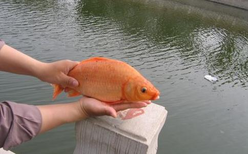

今天和同盟的管理员聊到
我是70后，前30多年一直不太顺利，很小的时候就拉痢疾，于是身体就不太好，从小贫血，还晕倒……唯一的好处，从小极富有同情心，家里养鸡就当宝贝，从来不会觉得那是给人吃的，认为那是自己的朋友。于是俺爹杀鸡时，俺在旁边说：刽子手！刽子手！没有能力反抗，大人就是天。杀了后肯定不吃，不能吃自己的朋友！
94年一个特殊的机缘，开始吃素。中途又开了两次荤。到2009年算，前前后后坚持了十年左右。那时候对佛的理解是，心中有佛即可。我不要拜石头佛，形式上的而已。也不念经不念咒不放生，仅仅吃素……但那一段日子过得并不顺利，结婚、离婚、中途一段非常黑暗的时间……都发生在这个期间，最后，地震了。人生没有过得如意，工资不高，仅仅可以养活自己，有时候失业在家，还得靠父母。整个人都是黑的，把自己封闭起来。
2004年底，算是一个转折，认识了现在的老公。非常好的一个人，对我影响也非常巨大，改变我性格很多不好的东西。07年6月，几年没有工作的我，开始做淘宝网店。也很顺利，从来不打广告，3个月就钻石了。一直做到地震那一天，停留在3钻。不然我认为可能一辈子都做衣服了。地震改变了一切，我们整整十个月没有开店也不工作。
09年过年时，我们去了当地的寺庙，那时，我重新开始吃素。重新研究到底应该怎么信佛，怎么做才是对的。因为妈妈也信佛，同时想给她找到一个
第一，每天念
第二，坚持放生。
然后在电脑上给佛
3月16号重新开业，3钻的店铺里和无信誉的店铺没有任何区别，一整天，不能看见一个人。就这样，到4月16日，我赚了600多元的毛利。拿了三分之一的毛利去放生。第二个月，上了一千。依然拿了三分之一的毛利去放生。后来知道，利润不应该这么算，好吧，我算错了，应该是净利润去放生才对。不过佛菩萨知道我的诚心，放生多永远比放生少好得多。就这样，我的店重新开始做出来了，之前做服装带我的人，我零信誉时她是5星。我三钻时她3钻。而此刻，我马上双皇冠，她还是4钻。09年同一个行业的，稍微做得好点都比我的信誉高，现在都比我信誉低。并且，这个店很容易吸引到信佛的朋友过来，都知道一点，信佛的人不打妄语。也许别人很难的信任，佛友之间很容易。
08年前，我们还住在姐姐的房子里，09年底，已经拥有了自己的住房。满足我在给佛菩萨信上的要求，不需要太大，（实际很大，480平米）但是一定要有种菜的地方。（种菜的地方有，还有一个大院子）虽然，为此背负了几十万的债，也很开心。我们这边房子不贵，一共也就几十万而已……买的时候我重开店8个月，手上一共几万元，但从来不担心还不上。给佛菩萨信上写的愿望，房子是最大的一个，从来没有想到当年就能实现。而佛菩萨真的就这么不可思议，让我迅速达成梦想。而我现在的
09年四月初八，我和妈妈去辽宁海城大悲寺皈依
总结下来，自己的感受是：
第一，坚持。不管是吃素还是放生，自从09年3月开始一直坚持到现在。基本上是拿出每月净利润的三分之一来放生，供养等等。今年添了一个新项目，帮助需要帮助的人和流浪动物一类的，大概一个月再拿出5000元左右。吃素一定不要吃葱蒜蛋之类的，要吃就吃干净，不要被外界诱惑。特别是亲人，他不懂的时候，总希望自己多吃荤，经常用，你吃点嘛，我不会告诉妈妈的。我是打死不吃，妈妈不知道，问题我自己的心知道。不希望为了满足一时的口福而让众生付出生命的代价。并且只有自己坚持好了，不
我们经常会出差，在外吃肯定也不太方便，原则依然是，宁可不吃，也不乱吃。大不了我自己带
第二，要念经念咒。
念经我做得不是太好，今年会重新补上。念咒天天有空就念，如果能背会
我经常都是心经
不过千万一点点小事都去求，尽量自己多努力。
第三，不要太有所求。
坚持了两年放生，除了三次帮佛友一起，知道佛友的情况，在回向的时候加了回向给他们，其他时候，我都回向给放生的众生，然后用楞严咒最后的回向词完毕。从来不单独回向给自己家人，但是，说真的，这两年来，我的生活，非常顺，顺到不可思议的顺。突然一下，我的人生就改变了，并且性格也变得好很多。最重要的是，老公也觉得，他再这样下去，可能都会信佛了呵呵。
因为我们打算要个孩子，他特别想要，但是不勉强，因为我身体的缘故，并且年龄也这么大了。我请他如果能生一个宝宝，和我一起每天念
话说远了呵呵，我真爱跑题。
总之一句话，放生的时候，不要想着放生能带给您多大的利益，诚心做就好，心诚是第一前提要义。放生也不一定就是要买鱼买鸟才叫放生，我们走到路上，看见死掉的小鸟都会埋了，能救的一定救。最开始老公也不理解，但是他现在做这些事都非常自然了，走路的时候注意脚下不要踩着蚂蚁，不要打吸您血的蚊子……放生无处不在，放生不仅仅是放众生的性命，更是让我们的心变得有大爱，更慈悲，是放我们自己自由！
请相信，佛说的一切都是真实不虚。我们只要按照佛说的去做就好，请记住，一定一定要行动！还有要坚持！